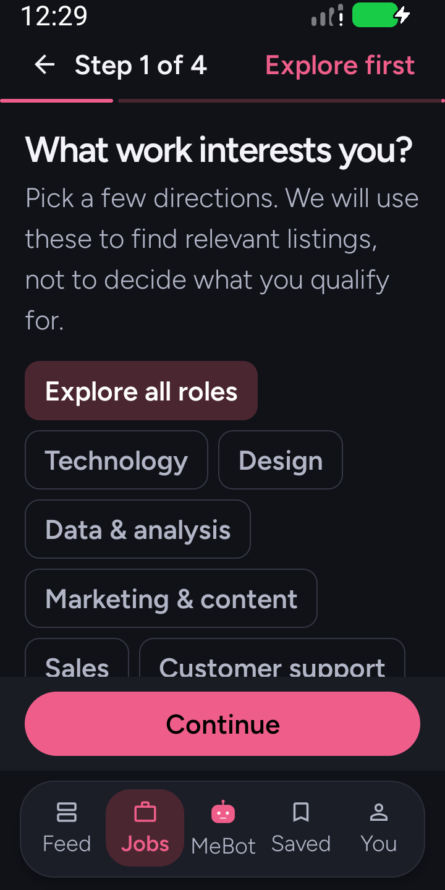
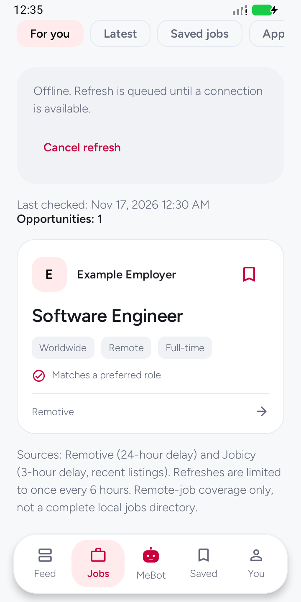
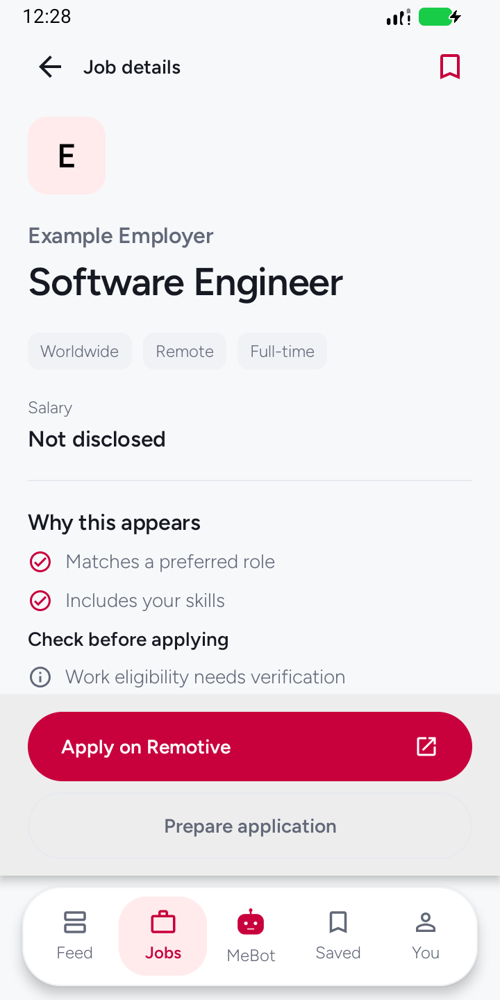
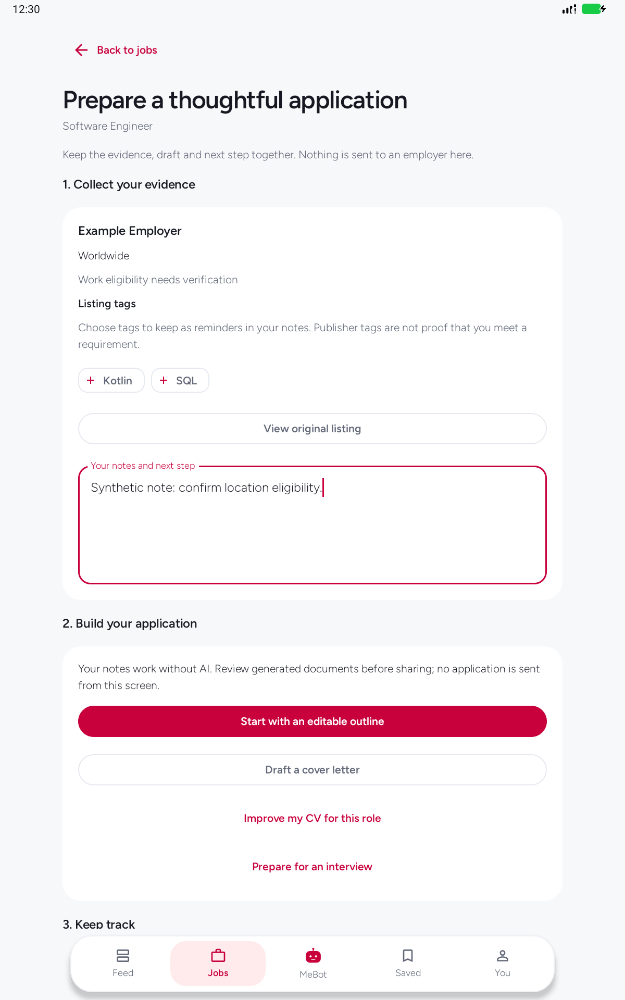
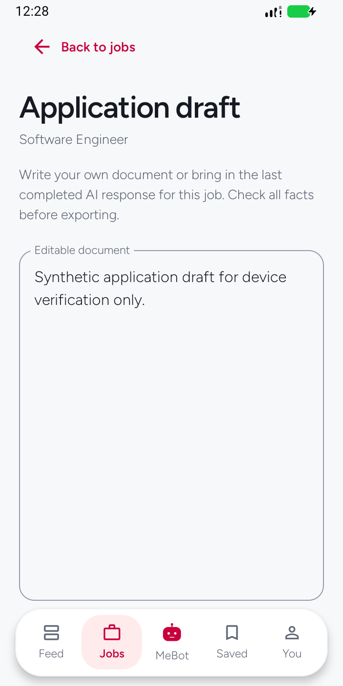
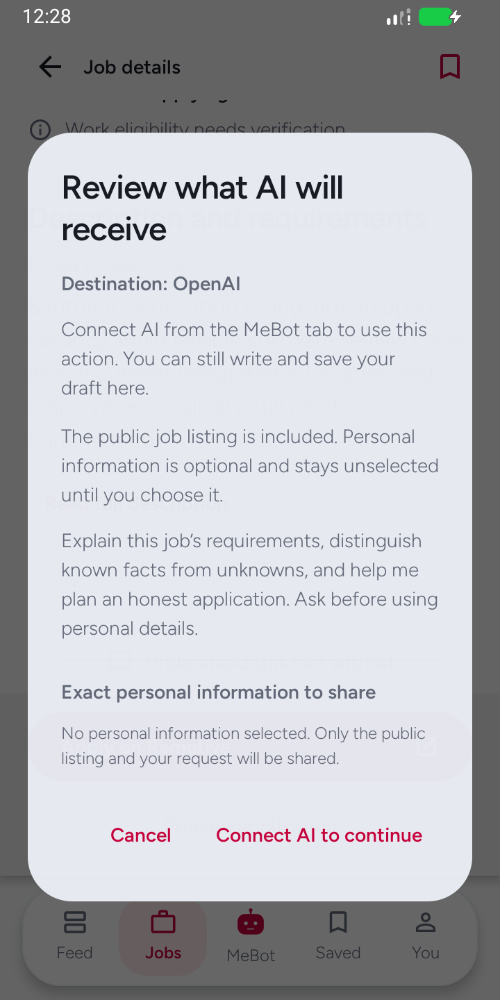

Your Jobs workspace
Find a role.
Keep your next step.
Choose the work you want, understand why a listing appears, and keep your application notes together. Browsing, saving and writing do not need an AI connection.
Already installed? Open You → Software Updates. Jobs has its own place in the app’s bottom navigation.
Inside Jobs
From a direction to a next step.
Six real native screens from the tested 0.10.1 debug build. Sample jobs, notes and drafts are synthetic, not live vacancies. No AI request was sent. Open any capture at full size.


Choose your direction
Selectable role groups start a four-step setup. Shown in dark mode with larger text.


Understand your shortlist
A sample listing explains its role match. The offline refresh remains visibly queued.


Know what to check
The listing separates match reasons from unverified eligibility and undisclosed salary.


Prepare with context
The tablet workspace brings listing tags, notes and an editable-outline action together.


Return to your draft
A saved synthetic draft is still present after reopening the app. No AI was needed.


Review before using AI
The disconnected AI review shows the destination and optional personal context. Nothing was sent.
Phone light, dark with larger text, and tablet views. Capture record · Exact build and image provenance. See the download page for the latest published release.
Start with what matters
Your preferences, not another account to create.
Move through four short steps: roles, skills, location and review. Choose from suggested options or add your own. Review any suggestions drawn from context already saved in MeBot; keep, change or remove them before saving. Employment and pay preferences are available when you want more detail.
Make the first list useful
Be specific about a role, but leave preferences open when you are exploring. Matching uses the listing’s available text; it is a reason to read further, not a prediction that you will be hired.
These setup suggestions are prepared on your device, not by sending your profile to AI. MeBot does not need an AI account to show public listings. Related modules can offer another route to relevant reading without replacing your Jobs preferences.
Read before you apply
The source stays in view.
Open a role to review the employer, location, work type, source and dates when provided. Match reasons explain what brought it into your list. Save it while you decide, or open the original listing to check the full requirements.
- Location is not eligibility
- A location-text match does not confirm a visa, work authorization or employer eligibility.
- Missing pay stays missing
- Unknown salary is not invented. A pay filter compares compatible published amounts, not guessed compensation.
- Opening is not applying
- Opening the employer’s page does not mark a job as applied. Update your application status yourself.
A place for the next step
Keep the role, notes and draft together.
Save a job and use its application workspace to keep your progress and next action. Write your own document in the editable draft. Review the facts and wording before exporting a PDF to a destination you choose.
You decide what leaves the app
MeBot does not submit applications or contact employers for you. Exporting a document creates a file; it does not send that file to the employer.
Saved listings and manual notes remain useful without AI. An offline refresh can wait for a connection, and you can cancel it without losing your saved roles.
Optional assistance
Ask about this job, not your whole life.
With your chosen AI provider connected, ask a question about a role or get help preparing a document. Responses stream into the job’s conversation. Review a completed response before bringing it into the editable draft.
Keep the context deliberate
Before sending, review the destination and question, choose which personal notes or draft text to include, and check the exact context preview. Leave those choices off to keep personal context out of that request. A connection is not permission to send unrelated profile notes or every conversation.
Check generated claims against your experience and the employer’s listing. AI can help with wording; it cannot verify your qualifications or guarantee a result.
Know the boundaries
A useful shortlist, not the whole job market.
The integrated feeds are Remotive and Jobicy. They cover remote opportunities, not every local employer or every country. Source delays and refresh limits mean a listing may not be new or still open. Always confirm availability at its source.
Separate Tanzania resource links open external websites. Those sites are not part of MeBot’s matching or job alerts.
Can I use Jobs without AI?
Yes. Public-source browsing, preference-based matching, saved roles, application status, notes, manual drafts and PDF export do not require AI. Network access is still needed to fetch new listings or open a source.
What happens when I am offline?
Previously saved listings remain available. Refresh can be queued until a connection returns, or cancelled. Check the listing’s last-updated time before acting.
What do job alerts do?
Optional alerts look for new matches under your saved preferences. Delivery depends on network access, Android background limits and battery settings. They are not instant vacancy notifications.
What is included in a backup?
Feed backups can include Jobs preferences, saved roles, application notes and drafts. Review the import notice before replacing local data. Job alerts are off after import until you choose to enable them again. Provider keys are excluded.
Does MeBot read my CV or apply for me?
No automatic CV parsing or application submission is included. Write or edit a draft yourself, review it, and choose where to share an exported file.
One workspace, your choices
Start with a role you care about.
Open Jobs in MeBot. Keep using Feed for reading and Feed → All modules for your other tools.